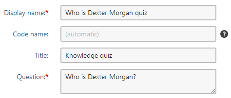
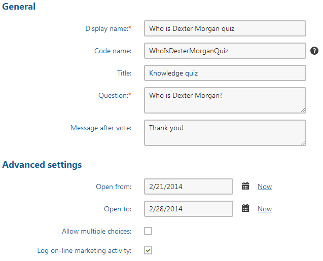
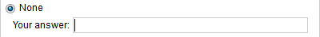
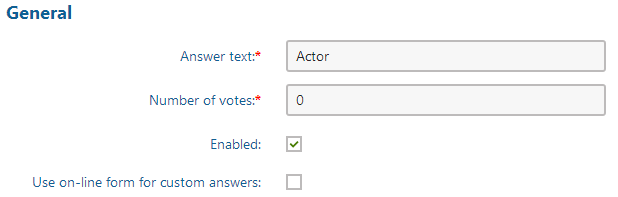
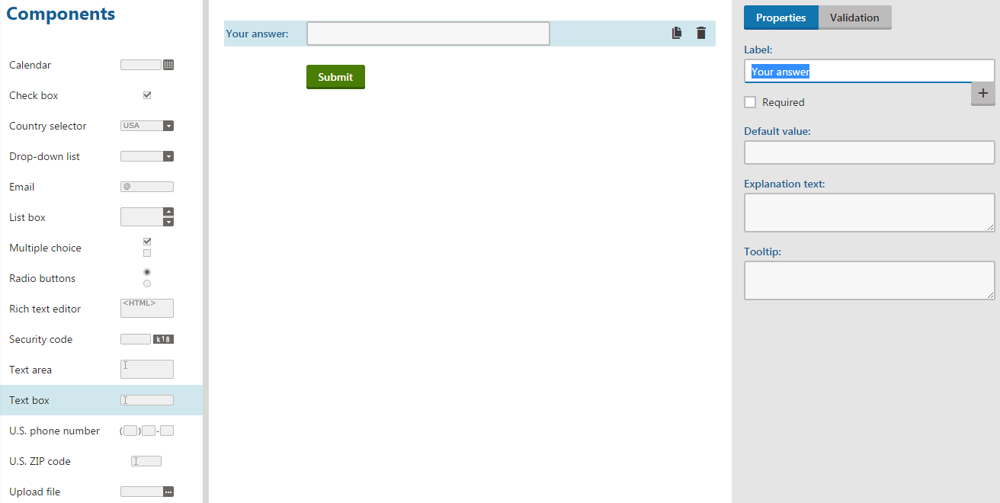
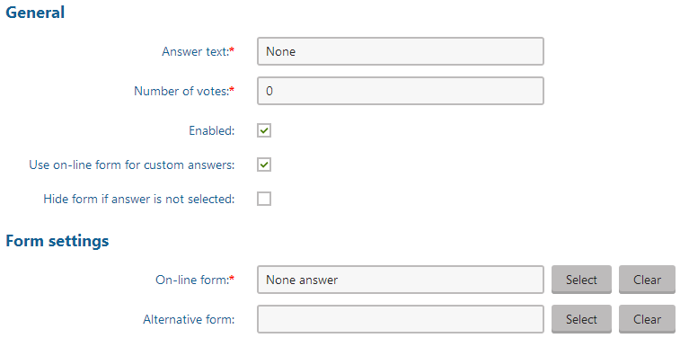
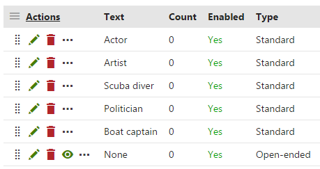
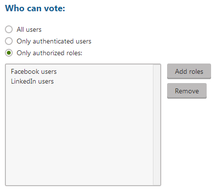
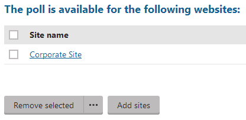

Creating polls
In this topic, you can learn about:
By default, both global and site polls are allowed in Kentico. Administrators can restrict the use of global polls as described in the Configuring polls topic.
You can manage both global and site polls in the Polls application.
Creating a new poll
Open the Polls application.
Choose whether the new poll will be site-based or global using the Site drop-down list options:
(global) - only global polls are listed in the poll list. The option allows creating a new global poll which can span across multiple sites.
current site - only current site polls are listed in the poll list. The option allows creating a new site poll.
Whether you see the Site drop-down depends on how your administrator configured the system.
Click New poll and specify its basics:
Display name - the name of the poll displayed to poll administrators.
Code name - the name of the poll used in the code. You can leave this field to be filled automatically.
Title - the title of the poll displayed on the live site; optional field.
Question - the poll question displayed in the poll view.

Click Save.
Editing poll properties
On the General tab, you can define more poll details:
Display name - the name of the poll displayed to poll administrators.
Code name - the name of the poll used in the code.
Title - the title of the poll displayed on the live site as well as on the View tab; optional field.
Question - the poll question displayed in the poll view.
Message after vote - the message displayed after vote; optional field.
Open from - indicates when the voting is opened; optional field.
Open to - indicates when the voting is closed; optional field.
Allow multiple choices - indicates if a visitor can select more than one option.
Log on-line marketing activity - indicates, if the voting actions should be logged. You can view them in the Activities application.
Note that this option is shown only when On-line marketing is enabled on your site.

Click Save.
Defining answers
You can define two types of answers for the poll:
Standard answers - predefined answers that the user can choose in the poll.
Open-ended answer - a combination of a predefined answers and a form, into which the user can enter custom information. Only available for site-specific polls.

An open-ended answer in a poll
Defining standard answers
Switch to the Answers tab.
Click New answer and enter the answer text.
Click Save.
(Optional) Specify the details of the answer:
Answer text - the text that will be displayed as an answer.
Number of votes - the default number of votes for this answer. Fill in this field, for example, when you want to simulate users voting in the poll. Later, this field also serves for showing the total number of votes cast for this answer.
Enabled - indicates if the answer should be displayed in the list of options. This is useful if you need to remove an answer from the poll while keeping the number of votes in the history. The disabled option is then not calculated into the displayed results.

Click Save.
Defining open-ended answers
To be able to define an open-ended answer, you have to first create a form, into which the custom data will be stored:
Open the Forms application.
Click New form and specify a Form display name.
Click Save.
Switch to the Form builder tab.
Drag the Text box component onto the form.
Modify the component's label. The label will be used as a label for the poll answer field.

Creating a field for an open ended answer
Now you can define an open-ended answer using the form:
Open the Polls application on the Answers tab.
Click New answer and enter the answer text.
Click Save.
(Optional) Specify the details of the answer:
Answer text - the text that will be displayed as an answer.
Number of votes - the default number of votes for this answer. Fill in this field, for example, when you want to simulate users voting in the poll. Later, this field also serves for showing the total number of votes cast for this answer.
Enabled - indicates, if the answer should be displayed in the list of options. This is useful if you need to remove an answer from the poll while keeping the number of votes in the history. The disabled option is then not calculated into the displayed results.
Check the Use on-line form for custom answers option.
(Optional) Check the Hide form if answer is not selected option, which displays the form only after the answer is selected.
Click the Select button next to the On-line form text field and select the previously defined form.
You can use the Alternative form option to choose a form that will be displayed with this answer instead of the on-line form.

Click Save.
The Use on-line form for custom answers option is disabled for global polls.
On the Answers tab, the defined answers are shown in the order in which they will be displayed on the website. To change the order, drag the answers to a different position using the Move ( ) area
) area

Listing poll answers
Defining who can vote in polls
Switch to the Security tab.
Choose, which users can vote in your poll:
All users - any visitor can vote.
Only authenticated users - only site members who sign in can vote.
Only authorized roles - only authenticated members of roles you specify in the field below can vote.

Sharing a global poll between sites
Switch to the Sites tab (it is available only for global polls).
Choose on which sites a particular global poll will be available. By default, the site where you created the poll is added.

Sharing global polls between sites
The Sites tab is visible only for global polls.
Previewing the poll
You can preview the poll on the View tab. The actual poll on your website may use a different design depending on the design of this website. It may also behave differently depending on the web part settings.